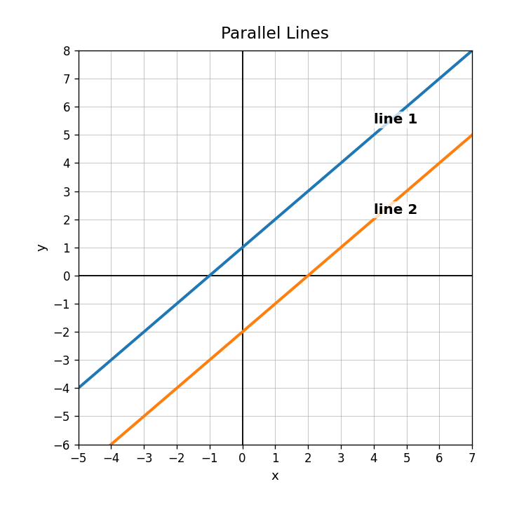
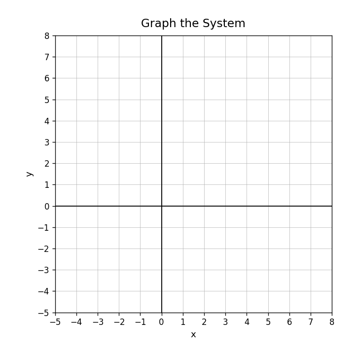
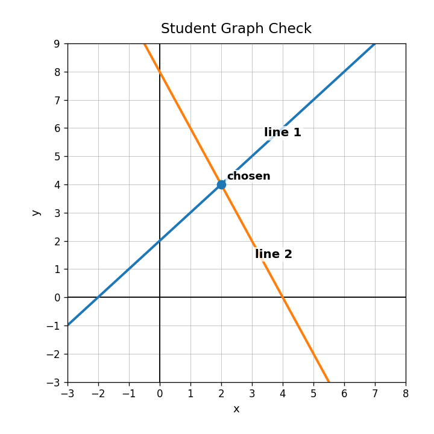
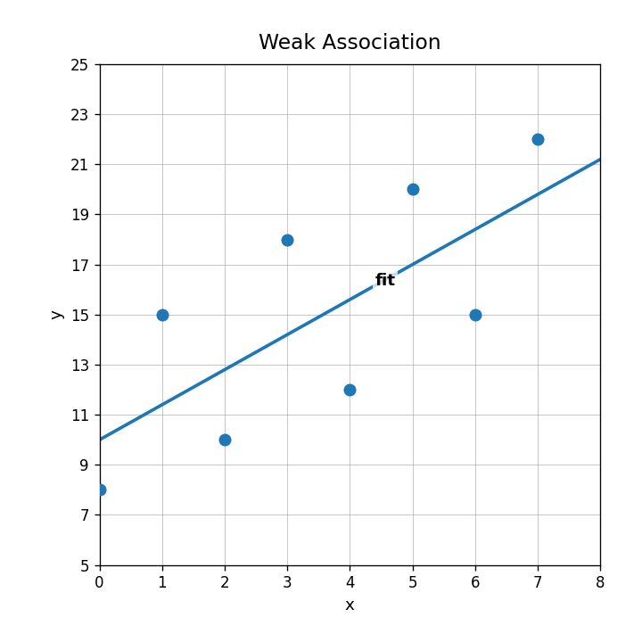
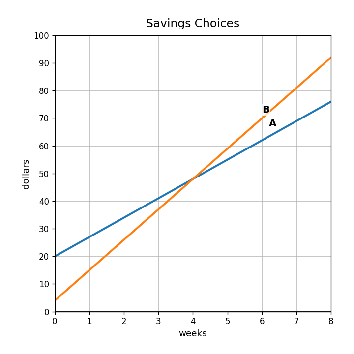

What solution type is represented by parallel lines?

Graph both equations on the grid and estimate the solution.
$$y=x+2\qquad y=-2x+8$$

A student chose the labeled point as the solution. Use the graph to critique the choice.

Create a system of two linear equations whose solution is $(4,1)$. Explain how someone could verify your system by graphing or substitution.
Describe the association in the weak association graph.

Use $y=1.4x+10$ to predict $y$ when $x=6$.
If the model predicts 78 and the actual value is 74, which value is predicted and which is observed?
Why should you notice the input range before making predictions from a line of fit?
In a study-time model, a slope of 3 means what in context?
Compare $y=3x+67$ and $y=-3.5x+84$. Which model increases and which decreases?
A data point is above the line of fit. Explain what that tells you about actual and predicted values.
Create a short data-collection question that could reasonably produce a positive linear association. Explain why.
Use the graph. Which plan has a larger starting value?

Compare $A=20+7x$ and $B=4+11x$. Which starts higher? Which grows faster?
Two plans cross at week 4. Explain what the intersection means in a comparison context.
Design two linear models that are equal when $x=6$ but have different rates of change. Show how you know.